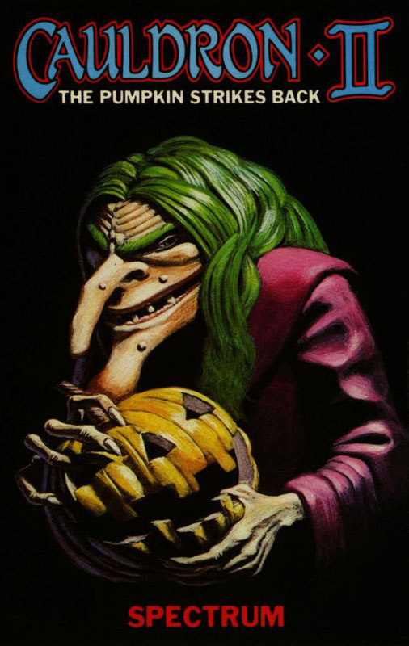
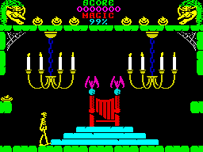

Cauldron II


{kind=link}

| Publisher: | Palace |
| Price: | £8.99 |
| Year: | 1986 |
| Source: | CRASH, Issue 31 |

At the end of Cauldron, the wicked witch defeats the Pumpking and wins the Golden Broomstick. Flushed with victory (and a stack of newly acquired magical power) the witch takes up residence in the Pumpking’s castle and moves her sidekicks in for company. All the fighting with the Pumpking has tired old witchy out, and now she spends most of her time tucked up in bed dreaming of world domination.
Little does she know, one of the Pumpking’s minions survived her veggie clean-up campaign. Under cover of darkness this determined delicacy makes its way stealthily towards the castle with one objective in mind: to take the golden broomstick and claim the Castle in the name of all things round and yellow.

pumpkinlet can find a crown. But that
nasty, indestructible skeleton is in the
way...
Although the wicked witch stays between the sheets, she has animated various objects within the castle to keep out undesirables. Floating mines, trolls with hammers and roasted pig heads which waggle their ears in anticipation and then pounce on intruders are amongst the army of horrors that awaits the little yellow fellow. Contact with anything that moves saps Pumpkin’s strength, and when the magic meter in the status screen reaches zero he bursts!
At the start of the game, the hero is unarmed — bouncing into a pool of sparkling magic replenishes the magic meter and allows nasty-zapping to begin. Unfortunately, the canny hell-hag has granted her minions the power of immortality, and after they’ve been blasted with a bolt of magic they re-appear a couple of seconds later. Some guardians, like the patrolling skeletons and fluttering bats, cannot be killed with a magic blast — the galivanting gourd can only get past them when a certain object is in the inventory. Gargoyles on the edge of the building harbour great magical secrets... misjudging a leap onto a gargoyle’s plinth sends the little hero falling into oblivion with the witch’s laughter ringing out loud.
Before the witch can be usurped, five objects must be collected and used at appropriate points in the game. The objects that Pumpkin Junior is carrying are displayed at the top of the screen along with the number of lives remaining. Points are added to the scoremeter each time a magical minion is zapped. Although the horrible warty hag is catching up on her beauty sleep, her evil spirit haunts the cobwebbed castle. When the veritable vegetable turns into pumpkin pulp she cackles hideously from her vantage point in the status area.
The smiling swede has obviously been doing some serious training for this mission, as he’s an agile little fellow, full of bounce. Pressing fire increases the level of sproing — there are three bounce strengths. The pumpkinette roams around the spacious castle by bouncing along, and up and over the obstacles in his path. Careful timing is needed, for movement is effected by pressing left or right as the vegetable hits the ground. Fire and a direction pressed together while the full-fibre hero is in the air shoots a bolt of magic off in the appropriate direction.
Considering the dangerous nature of his mission, Pumpkin seems unreasonably happy about everything, with his crooked little smile and the glint in his triangular eyes. When all lives are lost, the game can be restarted — but the pumpkin sets out from one of eight randomly selected start locations, so getting to know the castle’s geography is vital.
It is up to you to guide the Pumpkin rebel through the castle chambers, collecting and using items so the hag is destroyed and Veggie Power restored. Can you help the Pumpkin Strike Back?
CRITICISM
“At last us Spectrum owners get a chance at Cauldron II — and what a good game it is. The graphics are superbly drawn and beautifully animated. The Palace team has managed to get a brilliant combination of lots of colour and limited attribute clash. The way the pumpkin moves around is superbly realistic. The tune on the title screen is excellent and well matched by the creative sound effects within the game. There are some very nice touches — like the way control is reversed when you hit a hand. Although the game is brilliant I think a lot of people will find it a bit hard to get used to, and a fair bit of effort is needed before you become a competent pumpkin controller.”
“The best thing about this game for me is the sense of reward you get when a task is completed, as the game is hard enough not to be a walk over but easy enough to keep you playing. The graphics are not as good as they might have been, but they are by no means bad or sloppy: there are lots of characters that move around nicely and the backgrounds are very well detailed. Sound-wise, things are pretty good — there are some great spot effects during the game and a smashing tune on the title screen. Cauldron II needs practice to get into but once you’ve made the effort, I’m sure you’ll find it rewarding.”
“Great! A brilliant arcade adventure which doesn’t rely on the now rather worn and weary filmation style techniques. The game offers a lot more than its prequel and has one of the most novel control methods I’ve seen — bounce-ability, that’s the beauty of Cauldron II. The graphics are excellent with great backdrops and some of the best animated nasties I’ve seen in a long while. As for the game, well, it’s by no means easy, but I feel that it merits a lot of perseverance and is one which you’ll feel inclined to play and play. A very playable and addictive game that’s well worth the money.”
COMMENTS
| Control keys: | Definable |
| Joystick: | Kempston, Interface 2 |
| Keyboard play: | Responsive |
| Use of colour: | Very attractive |
| Graphics: | Clever animation, minimal attribute clash |
| Sound: | Very neat intro tune and spot effects |
| Skill levels: | One |
| Screens: | 128 |
| General rating: | An addictive sequel to an addictive game |
| Use of computer: | 90% |
| Graphics: | 91% |
| Playability: | 93% |
| Getting started: | 86% |
| Addictive qualities: | 92% |
| Value for money: | 89% |
| Overall: | 91% |